Address: 151 Elizabeth St, New York, NY 10012
Star Rating: 4.2 / 5
Website link: https://www.eggshopnyc.com/
Sunny little cafe focusing on everything egg including creative sandwiches, fancy Benedicts & more.
Address: 224 Lafayette St, New York, NY 10012
Star Rating: 4.4 / 5
Website link: http://jackswifefreda.com/
Lively bistro executing American-Mediterranean cooking & classic cocktails in understated digs.
Address: 236 9th Ave, New York, NY 10011
Star Rating: 4.5 / 5
Website link: https://www.sullivanstreetbakery.com/chelsea
Upscale bakery selling handcrafted gourmet breads, thin pizzas, pastries, sandwiches & more.
Address: 156 10th Ave, New York, NY 10011
Star Rating: 4.4 / 5
Website link: http://cookshopny.com/
Energetic, greenmarket-driven hot spot by the High Line serving American fare plus a popular breakfast.
Address: 42 Grove St, New York, NY 10014
Star Rating: 4.5 / 5
Website link: https://ilovebuvette.com/about/
Popular, quaint bistro offering a French small-plates menu at breakfast, lunch & dinner (till 2 AM).
Address: 183 W 10th St, New York, NY 10014
Star Rating: 4.2 / 5
Website link: https://www.whilewewereyoungnyc.com/
Stylish, airy bar & restaurant presenting refined New American fare & inventive craft cocktails.
Address: 401 W 25th St, New York, NY 10001
Star Rating: 4.4 / 5
Website link: http://www.citizensofchelsea.com/
Hip, Australian cafe with inventive breakfast & brunch fare, plus house-roasted coffee, beer & wine.
Address: 30 Carmine St, New York, NY 10014
Star Rating: 4.4 / 5
Website link: https://bluestonelane.com/cafes/west-village-carmine-st/
Melbourne-inspired coffee place offering Australian-style espresso drinks & cafe fare all day.
Address: 164 Mott St, New York, NY 10013
Star Rating: 4.1 / 5
Website link: https://www.twohandsnyc.com/
Bright & airy cafe with juices & espresso drinks plus light fare like pastries, salads & sandwiches.
Address: 345 Park Ave S, New York, NY 10010
Star Rating: 4.5 / 5
Website link: https://uplandnyc.com/
Spacious, casually chic brasserie with hearty dishes featuring Californian & Italian influences.
Address: 131 7th Ave S, New York, NY 10014
Star Rating: 4.2 / 5
Website link: http://ottostacos.com/
Otto’s is a taco spot in the East Village with a very simple menu and homemade
corn tortillas.
Address: 21 9th Ave, New York, NY 10014
Star Rating: 4 / 5
Website link: https://catchrestaurants.com/catchnyc/
Slick, bi-level space known for celebrity sightings, creative seafood-focused
food & a rooftop.
Address: 9 Crosby St, New York, NY 10013
Star Rating: 4 / 5
Website link: https://nomosoho.com/nomo-kitchen/
Modern restaurant serving upscale farm-to-table New American cuisine & cocktails
at the NoMo hotel.
Address: 55 Bond St, New York, NY 10012
Star Rating: 4.6 / 5
Website link: http://www.fishcheeksnyc.com/
Eatery by chef-brothers from Thailand for shareable Thai seafood plates with cocktails.
Address: 200 5th Ave, New York, NY 10010
Star Rating: 4.5 / 5
Website link: https://www.eataly.com/us_en/
Branch of the famed Italian market, offering counters, restaurants & cooking demos.
Address: 150 Ainslie, Brooklyn, NY 11211
Star Rating: 4.6 / 5
Website link: http://www.okonomibk.com/
Small Japanese place serving ramen at night & a traditional set breakfast
and lunch menu by day.
Address: 174 Elizabeth St, New York, NY 10012
Star Rating: 4 / 5
Website link: https://www.pietronolita.com/
Cozy 1950s-style bar/eatery with a pink motif offering eco-friendly Italian fare
and weekend brunch.
Address: 455 Hudson St New York, NY 10014
Star Rating: 4.3 / 5
Website link: https://www.kishkashnyc.com/
New York's new couscous-centric restaurant is Kish-Kash in the West Village.
Einat Admony, the force behind the popular Taïm falafel shop, is whipping up Moroccan
style couscous several ways. They include Three-Lemon Chicken Tagine, Slow-Cooked Lamb
with dried fruit, spicy fish called Chrime, and Tbecha Blask made with short ribs, swiss
chard, beans and potato. Rose-shaped Moroccan cookies dipped in syrup, called Debla, are
available for dessert.
Address: 390 Broome St, New York, NY 10013
Star Rating: 4.3 / 5
Website link: https://www.seamores.com/
Beachy, relaxed eatery serving sustainable seafood plus beer, wine & cocktails
in light-filled digs.
Address: 200 Mott St, New York, NY 100122
Star Rating: 4.2 / 5
Website link: http://epistrophynyc.com/
Brick walls & bookshelves lend character to this homey spot serving Italian
fare & global wines.
Address: 119 Baxter St, New York, NY 10013
Star Rating: 4.5 / 5
Website link: https://taiyakinyc.com/
A Japanese ice cream shop serving inventive flavors in a fish-shaped waffle cone
Address: 550 LaGuardia Place, New York, NY, 10012
Star Rating: 3.5 / 5
Website link: https://www.cookiedonyc.com/cookie-dough-confections
Sweet shop devoted to cookie dough served by the pint, in sundaes and mixed into other desserts.
Address: 189 Spring Street, New York, NY, 10012
Star Rating: 4 / 5
Website link: https://dominiqueansel.com/
This bakery-cafe headed by pastry chef Dominique Ansel serves up creative & beautiful French treats.
Address: 60 Mulberry Street New York, New York, 10013
Star Rating: 4 / 5
Website link: https://www.myeggloo.com/
Spot for Hong Kong egg waffles filled with ice cream & toppings, plus some savory choices.
Address: 162 8th Ave New York, NY 10011
Star Rating: 4 / 5
Website link: https://www.amorino.com/us/
Amorino offers Italian gelato, served with a spatula without limits in the choice of flavours